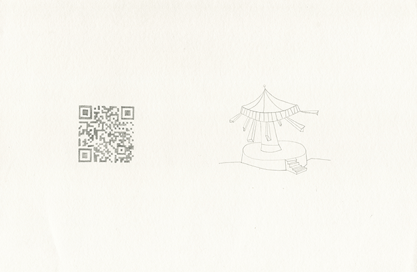
Katja Marie Voigt setzt sich künstlerisch mit selbstbestimmter und fremdbestimmter Lebenszeit auseinander. Schwerpunkt ist das Verhältnis zwischen mentalen Zuständen und dem Zeiterleben: In Experimenten begibt sie sich in selbst auferlegte Zeitstrukturen, in denen das Handeln und der freie Wille, als idealistischer Begriff, eingeschränkt sind. Der Fokus solcher Selbstversuche liegt bewusst und radikal auf der eigenen Empfindung. Sie nimmt gleichzeitig die Rollen der Versuchsleitung und die der Versuchsperson ein. Es entstehen Collagen aus Zeichnungen, Diagram und Text.
Sie bezeichnet sich selbst als forschende Künstlerin, da sie sich mit ihrem eigenen handelnden und denkenden Körper in Debatten und Theorien hineinbegibt: Gesellschaftlich relevante Thesen werden in ästhetischen Protokollen bestätigt oder widerlegt, subjektive Empfindungen mit Theorien aus wissenschaftlichen Diskursen verbunden.
Sie positioniert sich in der aktuellen artistic research Diskussion weniger mit einer Arbeit, die das eigene künstlerische Schaffen erforscht, sondern gesellschaftlich relevante Themen pointiert.
 Ausstellungsansicht REIF // Kühlhaus Berlin
Ausstellungsansicht REIF // Kühlhaus Berlin
 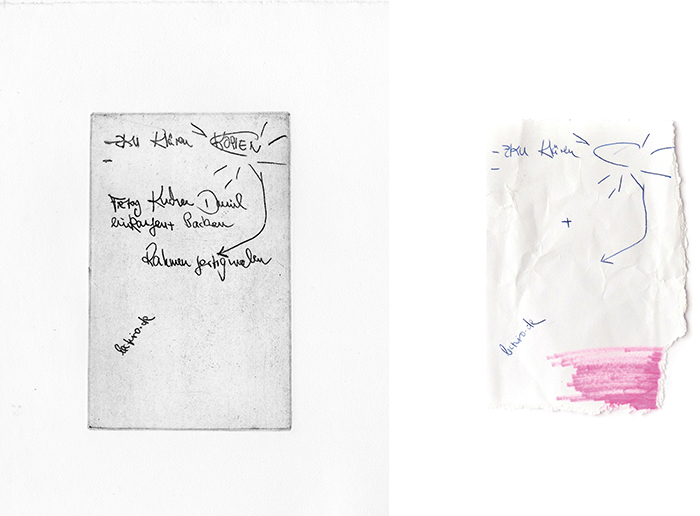
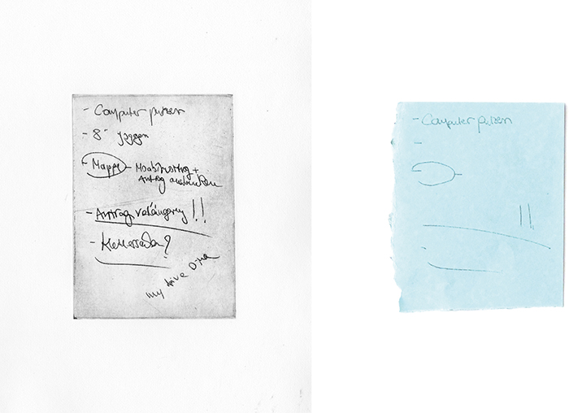
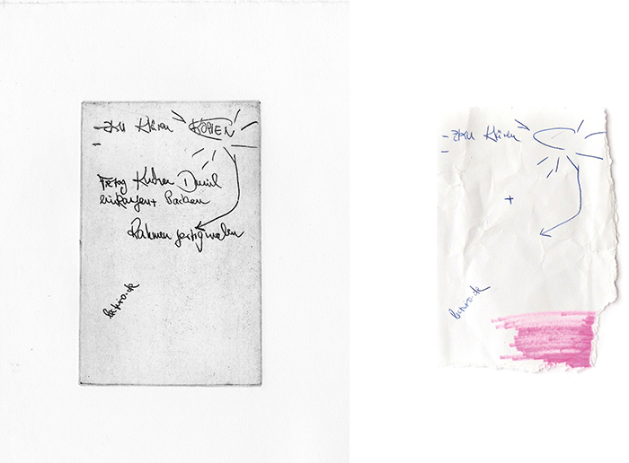
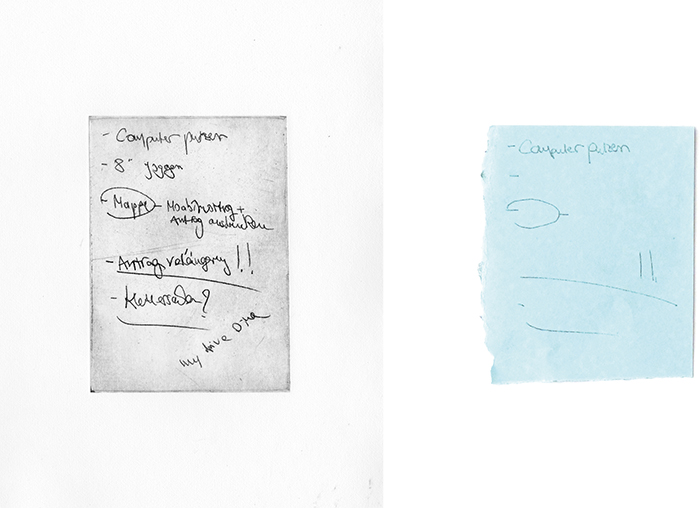

Ausstellungsansicht Galerie Zwitschermaschine Berlin
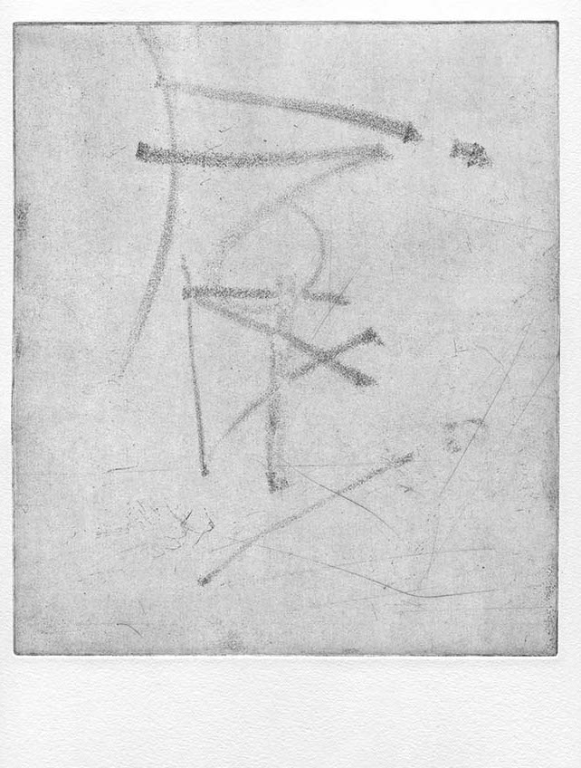
 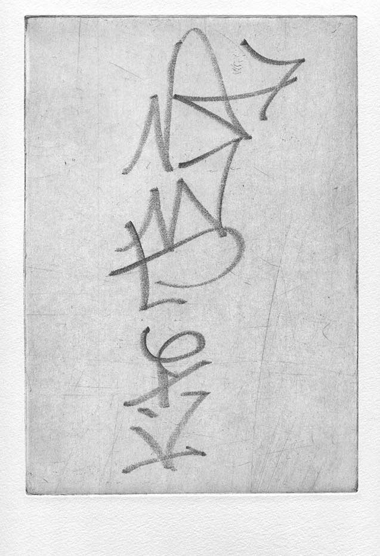
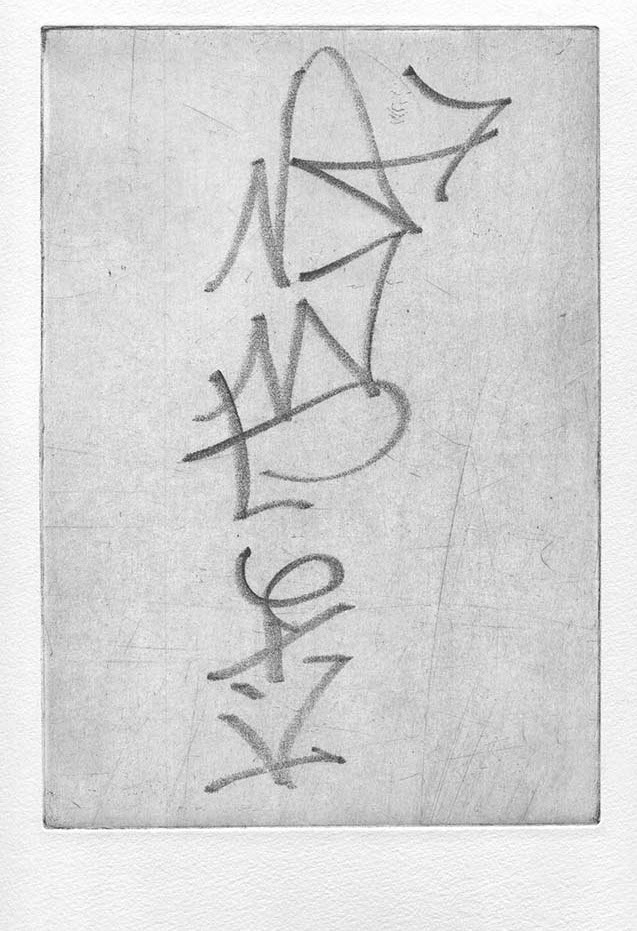

Dynamische Momente – erlebte Augenblicke – Episoden sind flüchtig. Sie lösen sich auf. Manche verblassen, ruhen als vage Erinnerung im eigenen Gedächtnis.
Die Arbeit projezierte vier erlebte Augenblicke, die an vier bestimmten Orten zu bestimmten Uhrzeiten passiert sind in die Zukunft. Farbige Koordinaten markieren die Punkte im Stadtraum und schaffen Spuren.
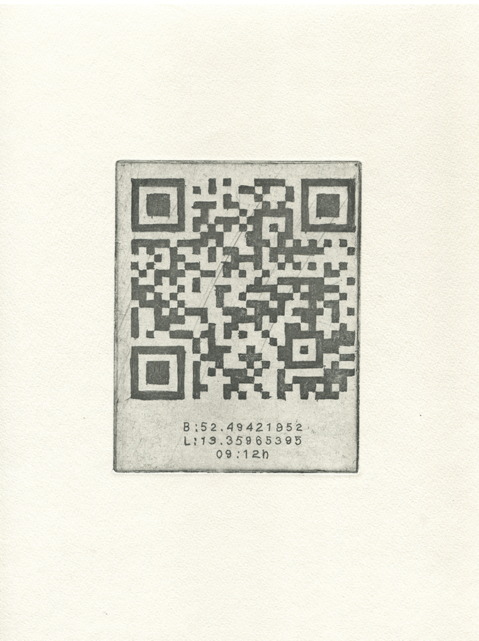 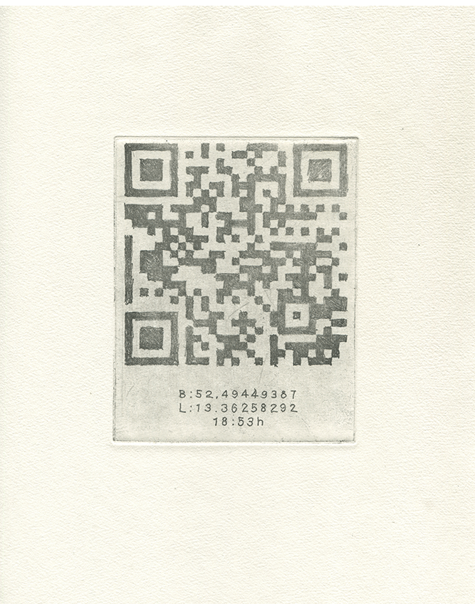 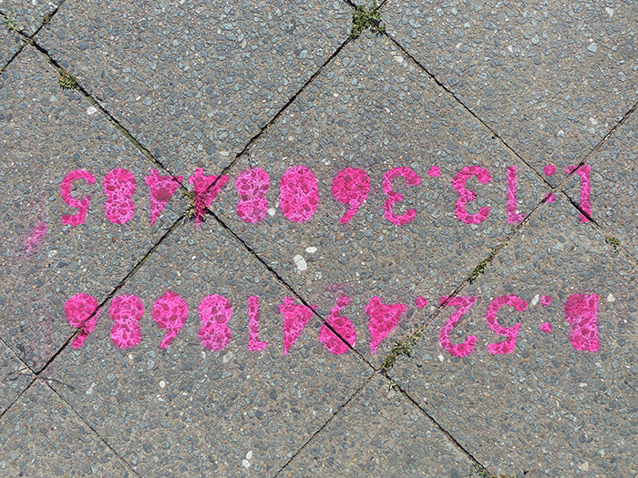 koordinate_a
B:52.49421952 L:13.35965395 09:12h
B:52.49441549 L:13.36109161 18:46h
Es gibt diesen Moment zwischen Schlafen und Wachen. Diesen Moment, an den man sich objektiv erinnern kann. Man liegt im Bett und wacht auf: das beißende Weckergeräusch, das Bewusstwerden, das Weichen des Traumes. Kann man diese mentale Situation konservieren, um sie noch einmal hervorzurufen?
Aufwachen ist das Ende und der Anfang
Aufwachen ist ein Zwischenstadium
Aufwachen ist ein Übergang
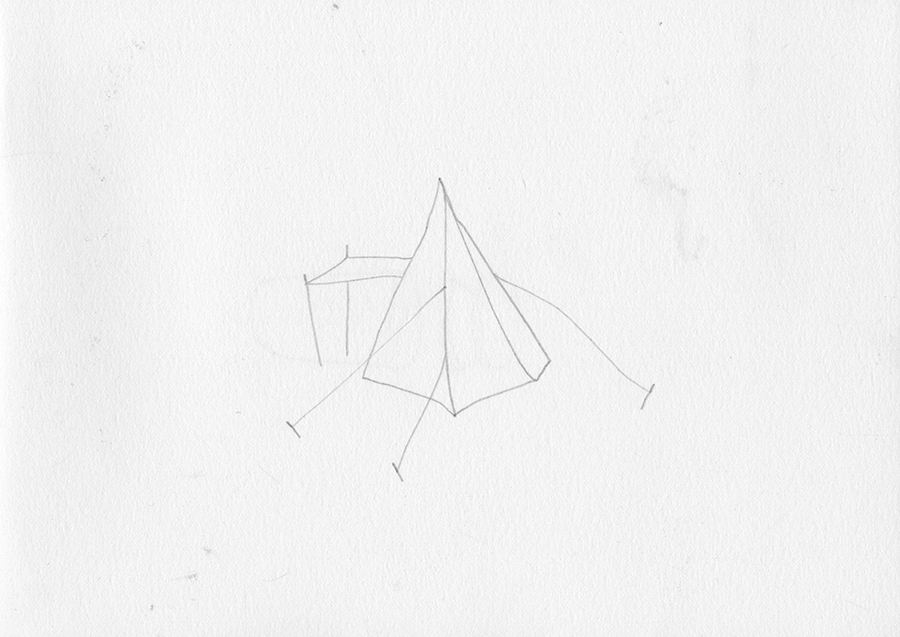
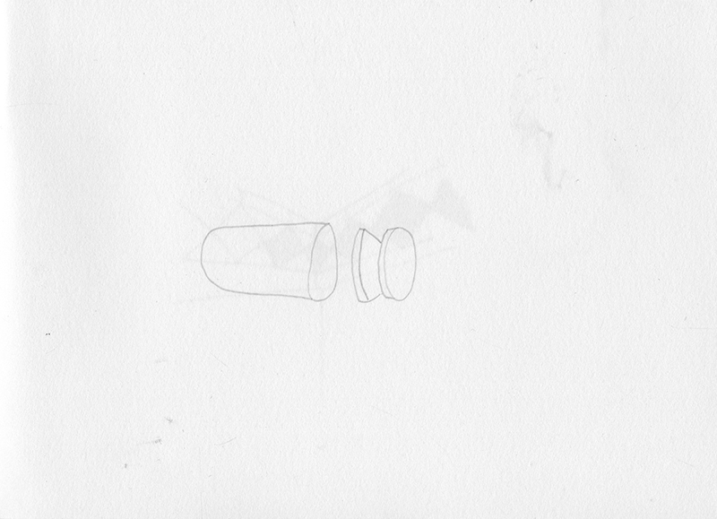 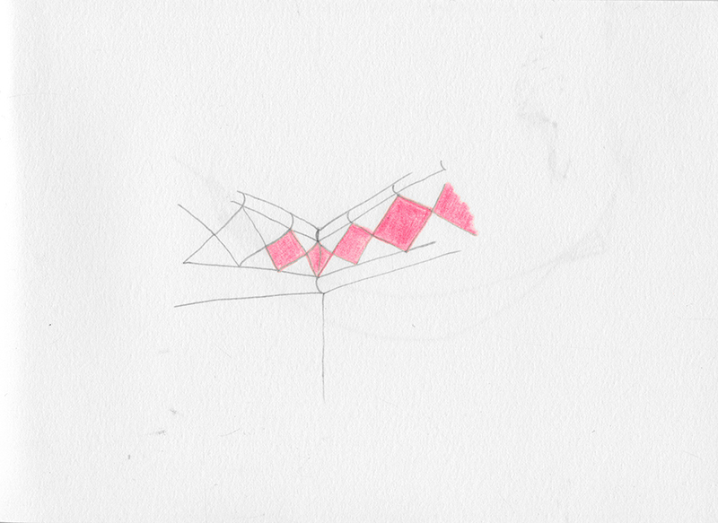Zeitpunkte
15.05.2013 07:42
16.05.2013 05:38
16.05.2013 06:11
Ein Aha Moment taucht plötzlich auf.
Ein Aha Moment evoziert ein Glücksgefühl, das Gefühl vollkommener Euphorie für diesen Moment – fast gleichzeitig mit dem Bewusstsein, eine Lösung gefunden zu haben.
Aha Momente sind besonders intensive Augenblicke des Erlebens. Neun Aha Momente sind in einem Jahr passiert. Sie wurden gesammelt. Im nachhinien wurde ihnen noch einmal Zeit gewidmet und assoziiert.
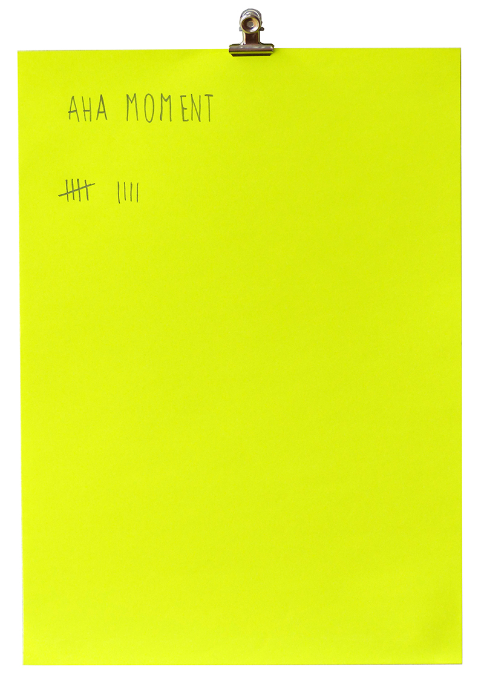 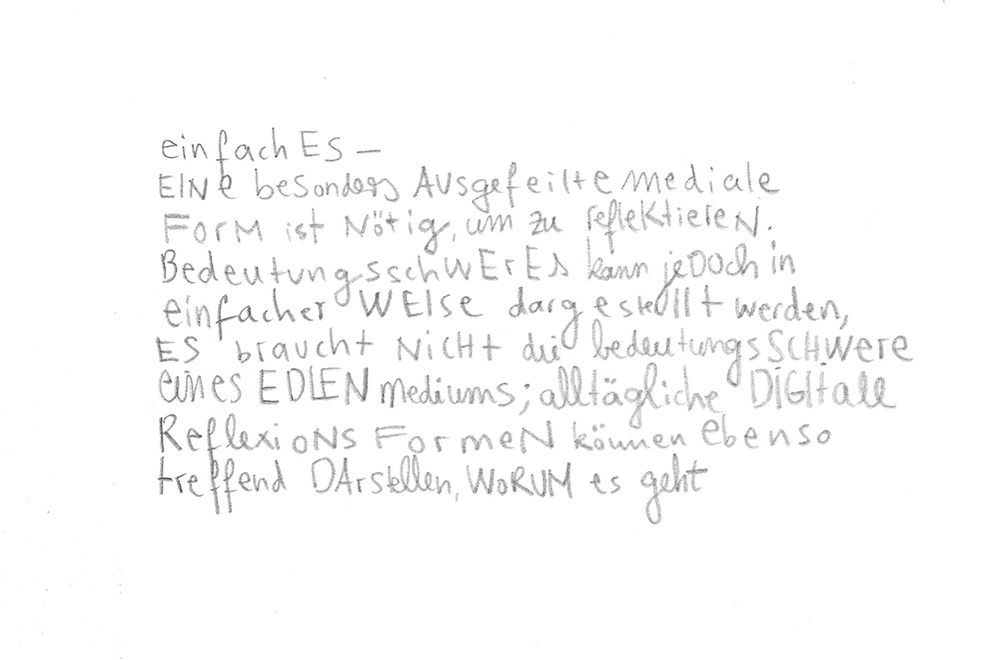 Aha Moment 3
Das Handbuch zur Überwindung der Zeit
zeigt die Auseinandersetzung mit der Echtzeit individuellen Erlebens und ihrer medialen Repräsentation.
Zeit, als eine Grunddeterminante des Lebens, wird im Handbuch zur Überwindung der Zeit in ihrer Komplexität vergegenwärtigt.
Jede LeserIn kann im Laufe der Lektüre ihre besondere Art und Weise der Zeitüberwindung zu fassen bekommen – und sei es nur für einen Augenblick.
Das Handbuch zur Überwindung der Zeit ist ein Hand gebundenes Unikat – ein künsterisches Sammelsurium. Die Arbeiten, die innerhalb von zwei Jahren zum Thema individueller Zeitüberwindung entstanden sind werden visualisiert, diskutiert und reflektiert.
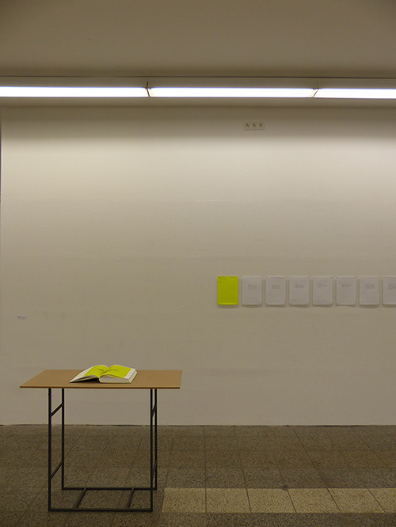
Ausstellungsansicht, Kunsthalle am Hamburger Platz Berlin Weißensee
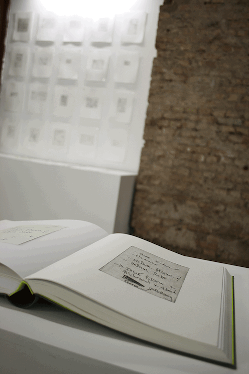
Ausstellungsansicht, Kühlhaus Berlin
Katja Marie Voigt * 1986 Bonn
Seit 2015 // phD. canditat Bauhaus Universität Weimar, FG freie Kunst 2013 // Master of Arts, Kunst im öffentlichen Kontext, Raumstrategien, Kunsthochschule Berlin Weißensee Vorsitzende / Gründungsmitglied Kunst Werk Stadt Berlin e.V.
2015 // Gruppenausstellung / ARYYOUTHERE? / L40, Verein zur Förderung von Kunst und Kultur am Rosa-Luxemburg-Platze.V 2014 // Einzelausstellung / IMAGO / 25.07.-17.08. / Galerie Zwitschermaschine, Berlin 2014 // Absolventenausstellung Kunsthochschule Berlin Weißensee Fachbereiche Kunst / REIF / 19.07-27.07. /Kühlhaus Berlin 2014 // Gruppenausstellung / TIME / 12.06.-15.06. / Salon am Moritzplatz Berlin 2014 // Vortrag / MOABEES / 27.5. / Kubinaut – Partnerbörse Kulturelle Bildung #3 Berlin Prodewil 2014 // Gruppenausstellung / ANONYME ZEICHNER – Based in Berlin / Pavillon am Milchhof Berlin 2013 // Lesung / HANDBUCH ZUR ÜBERWINDUNG DER ZEIT / Kunsthalle am Hamburger Platz, Berlin Weißensee 2013 // Gruppenausstellung / 7LOCOMOTION / Kunsthalle am Hamburger Platz, Berlin Weißensee 2013 // Werkschau / Raumstrategien / 15.04.-18.04. / Kunsthochschule Berlin Weißensee 2012 // Gruppenausstellung / MONHABITE EINE EXPEDITION/ ZK/U (Zentrum für Kunst und Urbanistik, Berlin) 2012 // Werkschau / INTER PERSPECTIVES / ZK/U (Zentrum für Kunst und Urbanistik, Berlin) 2011 // Vortrag / IBA LABOR Kunst Stadt, Hamburg / mit dem Club der internationalen Raumforscher Berlin
Katja Marie Voigt
Ganghoferstraße 2
10243 Berlin
mail@marieundich.com
© Katja Marie Voigt 2016 All rights reserved.